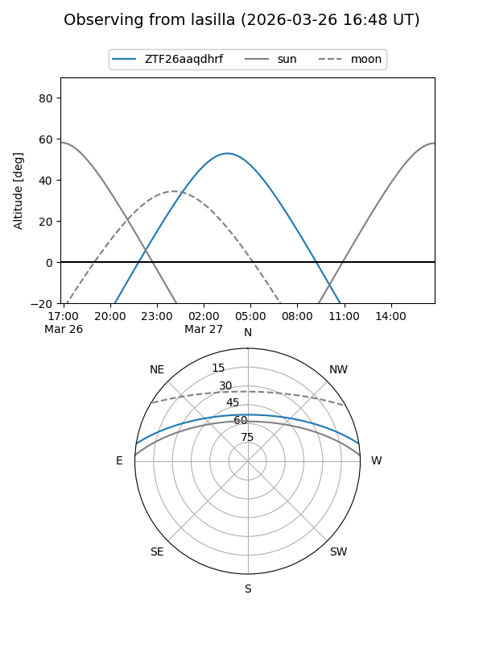
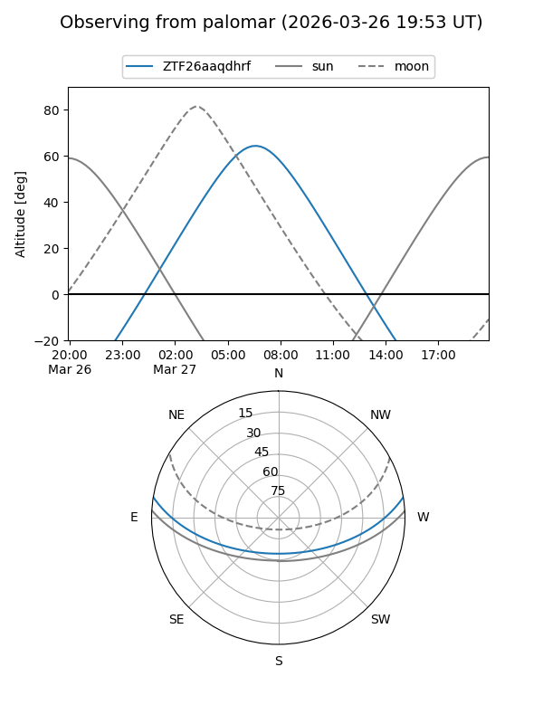

ZTF26aaqdhrf
Target ZTF26aaqdhrf at 2026-03-27 05:52
Aliases and brokers:
FINK: link
Lasair: link
ALeRCE: link
alt names
ZTF26aaqdhrf (ztf,fink_ztf)
Coordinates:
equatorial (ra, dec) = 166.2807,+7.91798
equatorial (HMS+DMS) = 11:05:07.37,+07:55:04.71
galactic (l, b) = (245.3382,+58.33809)
Flags:
Photometry:
last ztfg=19.86
1 ztfg detections
Lightcurve
Visibility


Additional plots